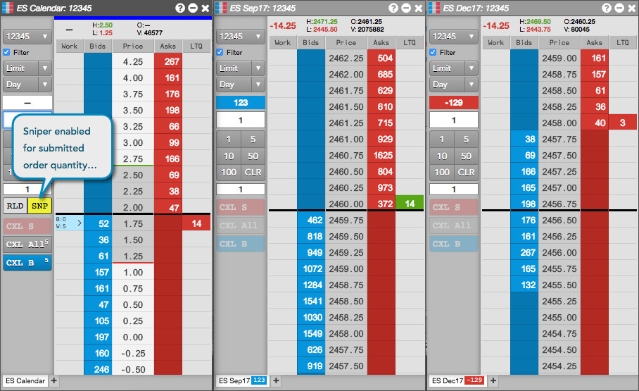
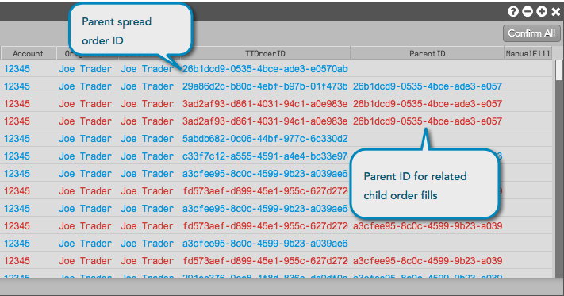

Autospreader provides the Sniper functionality as an order routing option. Sniper allows users to work spread orders without quoting a leg. Autospreader will monitor the synthetic market and simultaneously submit hedge orders across all legs when the spread price becomes available.
The 'Active Quoting' configuration parameter is ignored when the spread order is submitted in Sniper mode. Both Pre-Hedge and Post-Hedge rules are applied to Sniper hedge orders.
To submit a sniper order:
-
From Autospreader, launch the desired spread in an MD Trader widget.
Set the order parameters and enter an order quantity.
-
Click the SNP button to enable the Sniper functionality and enter the spread order at the desired price level.
The SNP button is highlighted to show that SNP has been selected. Subsequent orders will be submitted as Sniper orders. To disable the Sniper function, click the highlighted (enabled) SNP button.

When the order is entered at the implied spread price, the Sniper functionality does not submit a quoting order, but waits to submit child hedge orders in both legs that fill the working parent spread order.
The Order Book shows the colors for the working spread order and hedge orders.

Spread fills are displayed in the Fills widget.
The related child order fills show the parent spread order ID.

Tip: You can double-click the parent spread order ID to filter the related child order fills.
Using Reload with Sniper Orders
The Reload order type can be used in conjunction with a Sniper order. New Reload spread orders are submitted only after the previous Sniper order is completely filled. This means that any new Sniper spread orders will not be submitted until all components from the previously-submitted spread, including working and pending units, are either filled or deleted.
For more information about submitting reload orders from MD Trader, see
Submitting a reload order.